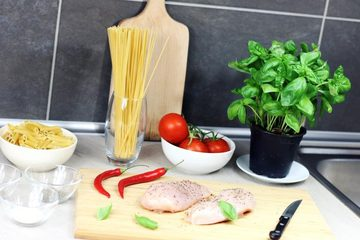

Gastronomía alemana, pedir en restaurante, hacer el súper y cocinar. Imprescindible para la vida cotidiana en Alemania.
| Alemán | Español |
|---|---|
| das Brot / das Brötchen | el pan / el panecillo |
| die Wurst | la salchicha/embutido |
| der Käse | el queso |
| das Schnitzel | el escalope/milanesa |
| der Döner | el döner kebab |
| die Brezel | el pretzel |
| der Kuchen / die Torte | el pastel |
| das Frühstück / Mittagessen / Abendessen | desayuno / almuerzo / cena |
| die Vorspeise | la entrada |
| das Hauptgericht | el plato principal |
| die Nachspeise / das Dessert | el postre |
| das Gemüse / das Obst | la verdura / la fruta |
| die Suppe | la sopa |
| Alemán | Español |
|---|---|
| das Bier / der Wein | la cerveza / el vino |
| der Kaffee / der Tee | el café / el té |
| das Wasser (mit/ohne Gas) | el agua (con/sin gas) |
| die Speisekarte | la carta/menú |
| bestellen | pedir/ordenar |
| die Rechnung, bitte | la cuenta, por favor |
| das Trinkgeld | la propina |
| lecker / nicht so lecker | rico / no tan rico |
| der Kellner / die Kellnerin | el mesero / la mesera |
| reservieren | reservar |
| die Portion | la porción |
| das Besteck / die Serviette | los cubiertos / la servilleta |